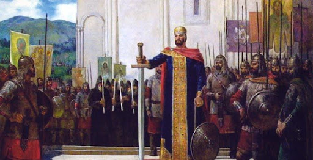

დიდგორის ბრძოლა ან ძლევაჲ საკვირველი (1121 წლის 12 აგვისტო) — ქართველთა ბრძოლა დავით IV აღმაშენებლის მეთაურობით თურქ-სელჩუკთა კოალიციური ლაშქრის წინააღმდეგ დიდგორის ველზე (მანგლისის მახლობლად, თბილისის მისადგომებთან). საქართველოს ისტორიაში დიდგორის ბრძოლა უდიდეს გამარჯვებათა რიცხვს მიეკუთვნება.
